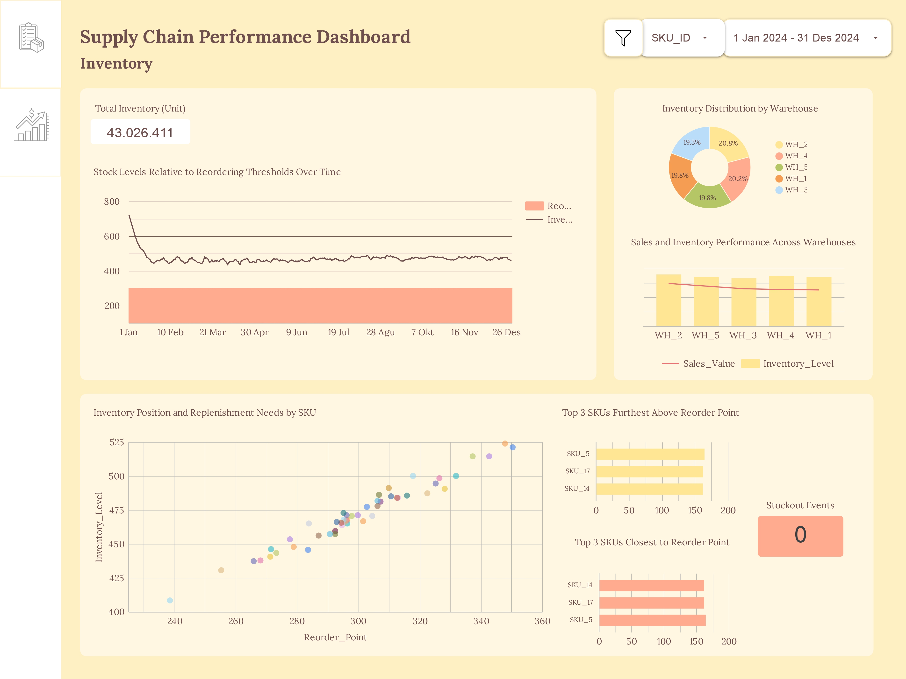
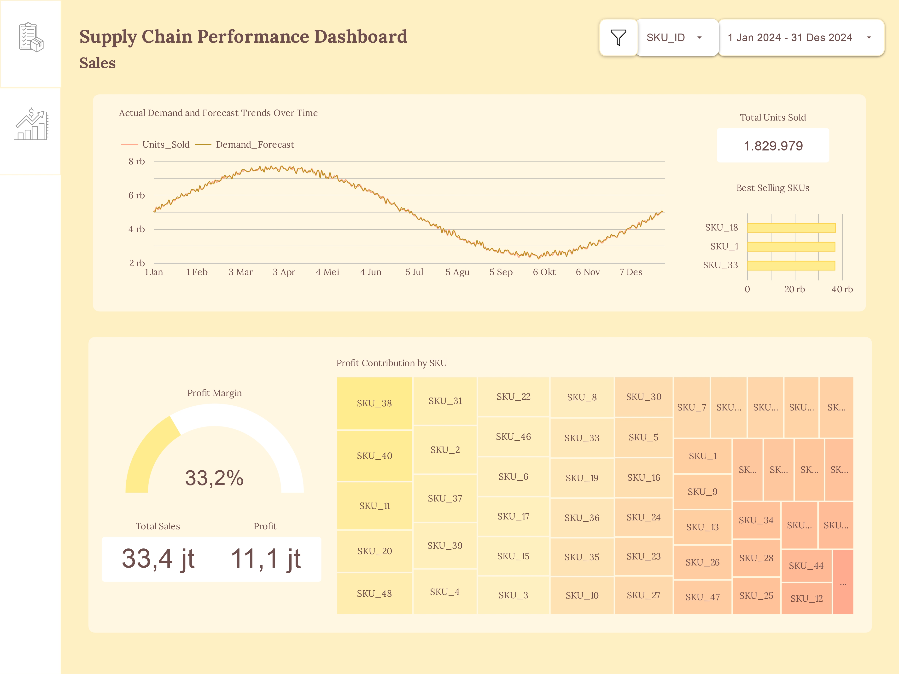
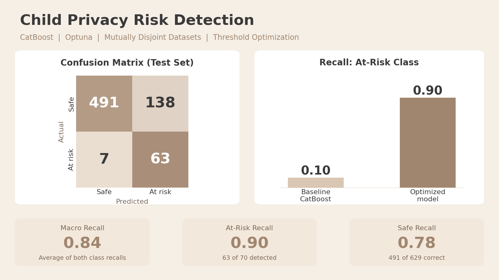
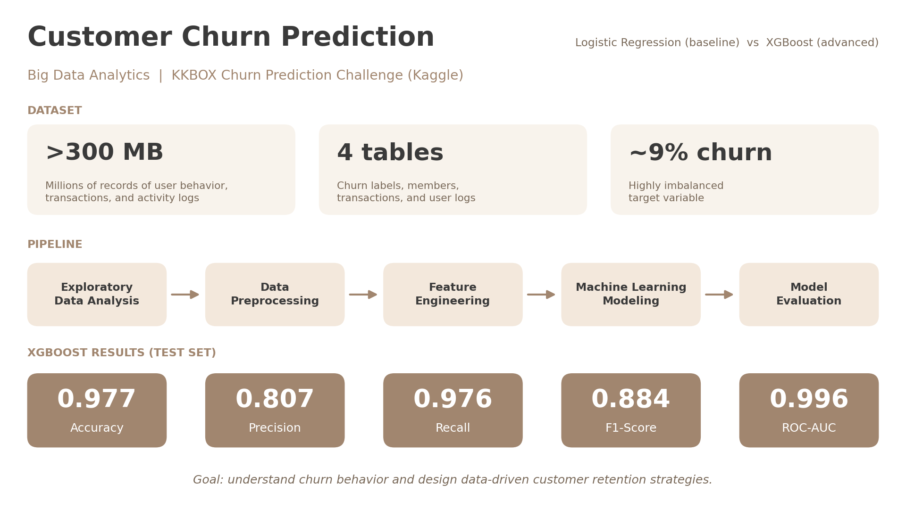
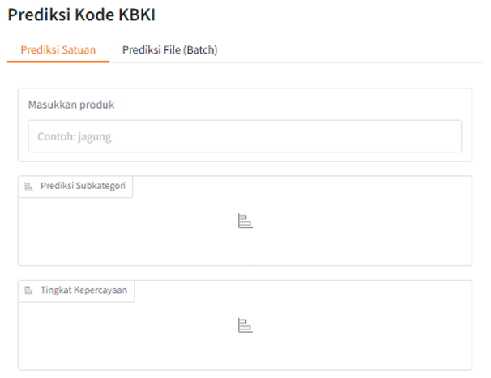
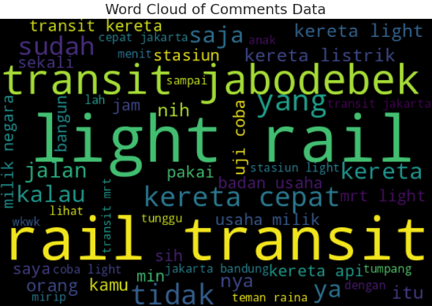
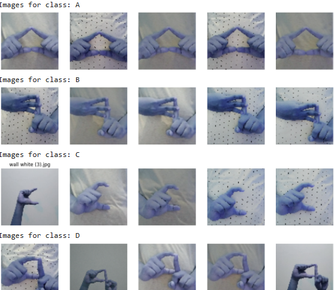
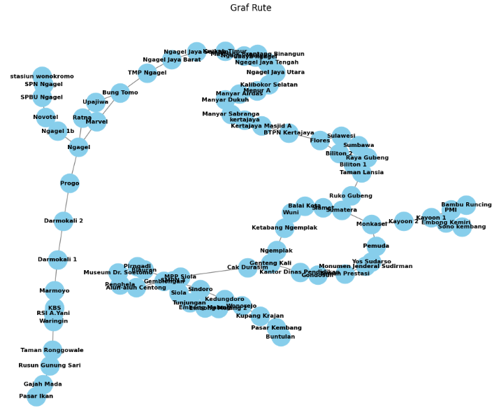
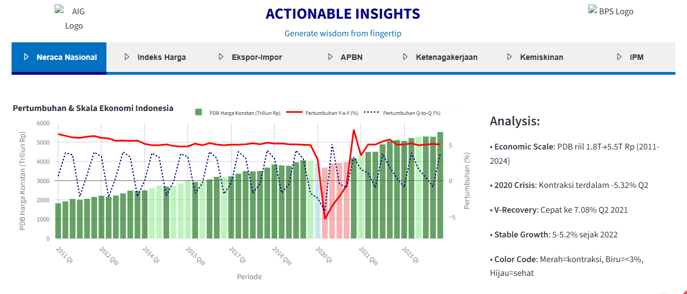

Data Science Graduate | Data Analyst | Data Scientist
Data Science graduate from Universitas Negeri Surabaya with internship experience at Statistics Indonesia (BPS RI) as Data Science Intern and PT Tawada Healthcare Indonesia as Data Analyst Intern. Graduated with cum laude honours and demonstrated strong academic performance. Experienced in many data science projects, organizational activities, complemented by professional certifications also strong interest in data and emerging technological trends.


Interactive supply chain performance dashboard built in Google Data Studio from 91,250 daily records across 50 SKUs and 5 warehouses, covering inventory monitoring, reorder point analysis, and sales performance. Data cleaning and exploratory analysis were conducted in Python. Live dashboard: view here.

Machine learning model to detect digital applications potentially violating children's privacy regulations using CatBoost. The model applies Mutually Disjoint Dataset, hyperparameter optimization, and threshold optimization to improve minority-class detection on highly imbalanced data.

Data aggregation and machine learning modeling for customer churn prediction using a large-scale KKBOX dataset.

Initialization of product classification system based on KBKI (Indonesia's Standard Commodity Classification) using H2O AutoML, including data preprocessing, modeling, evaluation, and prototype deployment with Gradio.

NLP-based sentiment analysis of LRT Jabodebek to evaluate public perception, with 86% accuracy using TF-IDF and SVM in Python.

Machine learning model to classify BISINDO (Indonesian Sign Language) letters based on hand images using HOG and SVM, achieving 77% accuracy on non-augmented data in Python.

Python-based program simulating route guidance for public transport "Wira Wiri Surabaya".

Early-stage development of a Streamlit-based dashboard analyzing Gross Domestic Product (GDP), inflation, trade, poverty, employment, and human development indicators.